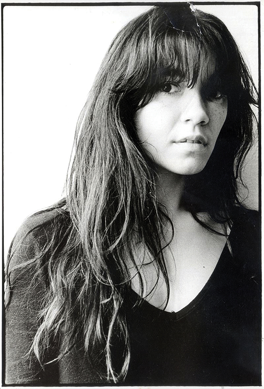

Margita Magi Stefanović
Margita Magi Stefanović, (Beograd, 1. april 1959 — Beograd, 18. septembar 2002) bila je srpska muzičarka, najpoznatija kao klavijaturistkinja beogradske rok grupe Ekatarina Velika.
Rođena je kao jedinica u porodici beogradskog pozorišnog i TV-reditelja Slavoljuba Stefanovića-Ravasija Pohađala je i završila osnovnu školu „Oslobodioci Beograda“ (1965–1973) i VIII beogradsku gimnaziju, matematički smer (1973–1977). Nižu i Srednju muzičku školu, instrumentalni odsek, klasa profesorke Miroslave Lili Petrović, pohađa i završava u periodu od 1967–1976. u školi „Josip Slavenski“. Tokom školovanja bila je učesnik mnogih takmičenja i nosilac brojnih nagrada na sastajanjima instrumentalista i kamernih orkestara i ansambala u Jugoslaviji i inostranstvu. 1970. godine, kad joj je bilo 11 godina, a Ivu Pogoreliću 12, kao najtalentovaniji u klasi dobijaju ponudu od ruskog profesora Timakina za nastavak školovanja u muzičkoj školi u Moskvi. Margitini roditelji odbijaju ponudu, a Ivo iste godine (1970) odlazi u Moskvu. Margita nastavlja školovanje u Beogradu, „preskače“ šesti razred niže muzičke škole i upisuje prvi srednje. Godine 1977, nakon završetka gimnazije, upisuje Arhitektonski fakultet u Beogradu. Kao student osvaja treću nagradu na međunarodnom konkursu u Japanu za rad na temu uređenja crnogorskog sela Reževići. Istovremeno važi za jednog od najtalentovanijih klasičnih pijanista. 1981/2. školske godine apsolvira na smeru projektovanja „Smrznute muzike“ /arhitekture/, a 1984. diplomira sa temom „alternativno projektovanje“ kod profesora Milana Lojanice. Prekretnicu u njenoj muzičkoj orijentaciji predstavlja prisustvovanje koncertu tek formiranog benda Milana Mladenovića Katarina II u sali bioskopa Topčiderska zvezda. Prvog maja 1982. upoznaje članove grupe Električni orgazam, a kroz druženje sa njima i Milana Mladenovića. Mladenović je, fasciniran njenim talentom i voljom za istraživanjem, poziva da se pridruži grupi, te kupuje sintesajzer na kojem Stefanovićeva vežba. Nakon povratka sa tromesečnog puta po Južnoj Americi Margita Stefanović postaje stalni član sastava. Katarina II 1985. menja ime u Ekatarina Velika i deluje sve do 1994. godine. Tokom tog perioda Margita Stefanović komponuje i muziku za pozorište (predstave Klasni neprijatelj, Tri sestre, S one strane duge i Majka hrabrost) i televiziju (drama Plavi, plavi), radi kao producent (Karlovi Vari) i gostuje na albumima mnogih jugoslovenskih grupa (Bejbi Kejt, Elvis J. Kurtović, Van Gog, Babe). Godine 1985. pojavljuje se u filmu Gorana Markovića Tajvanska kanasta u ulozi sestre glavnog junaka. U filmu se pojavljuje i EKV izvodeći pesmu Tatu (engl. Tatoo). Posle raspada Ekatarine Velike nastavlja da se bavi muzikom. Sa nekoliko beogradskih muzičara krajem 1994. osniva bend Kurajberi koji uglavnom izvodi obrade stranih i domaćih hitova po beogradskim klubovima. Godine 1995. osniva bend EQV sa muzičarem Vladimirom Stojićem i izdaje CD Ti si sav moj bol (nazvan po pesmi Ekatarine Velike) za bečku muzičku kuću Coop Arts & Crafts Unlimited. Na CD-u se nalazi i tehno obrada istoimene pesme. U tom periodu nastavlja da gostuje i na albumima i koncertima jugoslovenskih bendova i povremeno svira sa sastavima Glisersi, Zion banda i Direktori. Krajem 90-ih njena muzička aktivnost slabi. Godine 2002. komponuje muziku za predstavu beogradske rediteljke Hajdane Baletić Kaput mrtvog čoveka što je njeno poslednje muzičko delo.